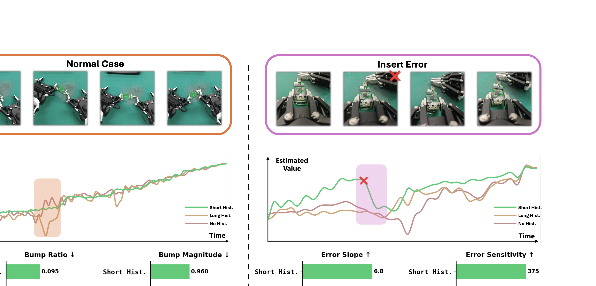
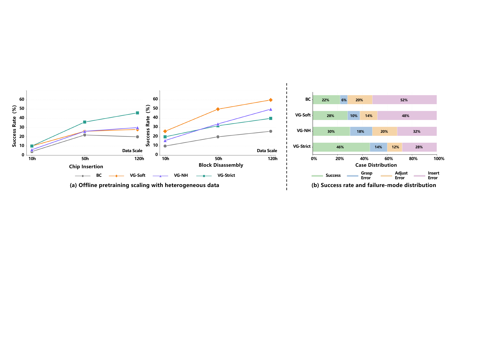
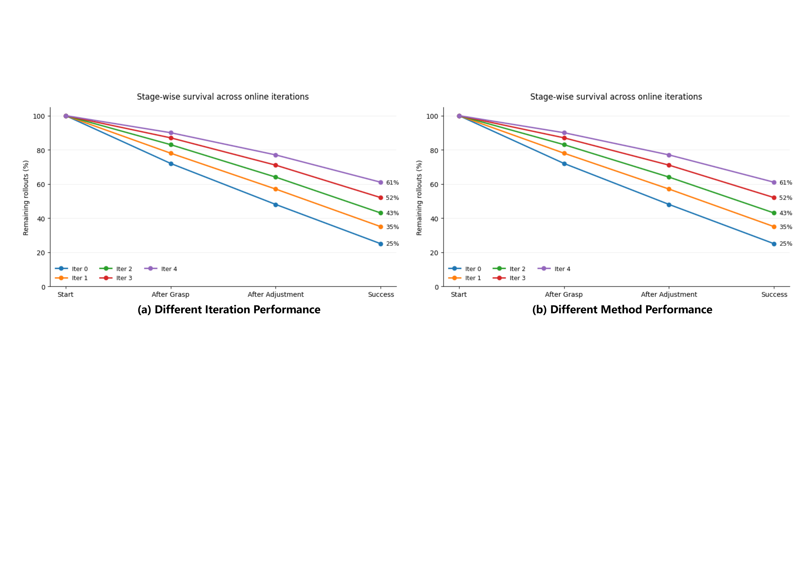

Chip Insertion
Video loading area
Offline-to-Online Robotic Reinforcement Learning
Robo-ValueRL studies how value-function reliability shapes offline-to-online robotic reinforcement learning. It learns history-conditioned value estimates, propagates them into quality-conditioned policy pretraining, and uses reliable value guidance to stabilize online improvement from real robot rollouts.
Placeholder for the full Robo-ValueRL system introduction.
Video loading area
Video loading area
The framework links value estimation, quality-conditioned policy learning, and residual online adaptation in one offline-to-online pipeline.

Recent visual history reduces ambiguity from occlusions, repeated motions, and visually similar task stages. The three clips can later show value progress, error sensitivity, and history ablations.
Estimator demo placeholder
Estimator demo placeholder
Estimator demo placeholder
Value differences become action-quality indicators for efficient one-step action generation under high-frequency control. This group can show quality labels and task-specific policy behavior.
Policy demo placeholder
Policy demo placeholder
Policy demo placeholder
High-quality rollout segments train a lightweight adapter while preserving the pretrained base behavior. Later videos can show the residual gate, self-correction, and failure recovery.
Adaptation demo placeholder
Adaptation demo placeholder
Adaptation demo placeholder
Across 240 hours of offline demonstrations and over 3,000 online rollout trajectories, reliable value estimates support stronger offline scaling and more stable online improvement.

Reliable value functions preserve global progress, maintain local fluency, and detect execution errors. These properties align with downstream policy success.


Detailed demos
Failure recovery, self-correction, and online adaptation are treated as method/result evidence rather than intro tasks.
Results demo placeholder
Paper, data, and videos are organized for release. For questions, please open an issue on GitHub.
@inproceedings{xia2026robovaluerl,
title={Robo-ValueRL: Reliable Value Estimation for Offline-to-Online Reinforcement Learning},
author={Xia, Wenke and Ren, Pei and Yu, Wenbo and Zhang, Yizhuo and Li, Jifan and Zhang, Yixue and Zhao, Yinuo and Gao, Qingyang and Fu, Jianlong and Tang, Jian and Che, Zhengping and Hu, Di},
booktitle={Conference on Robot Learning},
year={2026}
}